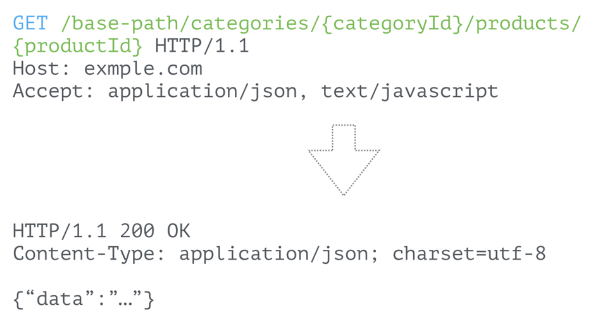

本文主要讲如何对接口进行设计，让URL更为合理，指定合理的数据格式，处理错误码的方式
1. API 概念#
广义的API（Application Programming Interface）是指应用程序编程接口，包括在操作系统中的动态链接库文件例如dll\so，或者基于TCP层的socket连接，用来提供预定义的方法和函数，调用者无需访问源码和理解内部原理便可实现相应功能。而当前通常指通过HTTP协议传输的web service技术。
API和语言无关，理论上具有网络操作能力的编程语言都可以通过相应HTTP请求并构造HTTP包来完成API的架构。API和Json，xml等媒体类型没有太大的关系，它们知识一种传输或媒体的格式，便于计算机解析和读取数据。
基于以上，API设计的目的是为了让程序可读，应当遵从简单、易用、无状态等特性，这也是为什么Restful风格流行的原因。
2. Restful API#
Restful = 有意义的URL + 合适的HTTP动词
REST（英文：Representational State Transfer，简称REST），RESTful是一种对基于HTTP的应用设计风格，只是提供了一组设计原则和约束条件，而不是一种标准。网络上有大量对RESTful风格的解读，简单来说Restful定义URI和HTTP状态码，让你的API设计变得更简洁、清晰和富有层次，对缓存等实现更有帮助。
HTTP包处于网络应用层，因此HTTP包为平台无关的字符串表示，如果尽可能的使用HTTP的包特征而不是大量在body定义自己的规则，可以用更简洁、清晰、高效的方式实现同样的需求。

例子中使用路径参数构建URL和HTTP动词来区分我们需要对服务所做出的操作，而不是使用URL上的接口名称，例如 getProducts等；使用HTTP状态码，而不是在body中自定义一个状态码字段；URL需要有层次的设计，例如/catetory/{category_id}/products 便于获取path参数，在以后例如负载均衡和缓存的路由非常有好处。
RESTful的本质是基于HTTP协议对资源的增删改查操作做出定义。理解HTTP协议非常简单，HTTP是通过网络socket发送一段字符串，这个字符串由键值对组成的header部分和纯文本的body部分组成。Url、Cookie、Method都在header中。
3. JSON API#
因为RESTFUL风格仅仅规定了URL和HTTP Method的使用，并没有定义body中数据的格式。那么问题来了：
如何定义请求或者返回对象的结构，该如何针对不同的情况返回不同的HTTP状态码呢？
JSON已经是最主流的网络传输格式，因此本文默认JSON作为传输格式来讨论后面的话题。JSONAPI尝试去提供一个非常通用的描述数据资源的格式，关于记录的创建、更新和删除，因此要求在前后端均容易实现，并包含了基本的关系类型。
3.1 MIME类型#
JSON API数据格式已经被IANA机构接受了注册，因此必须使用application/vnd.api+json类型。客户端请求头中Content-Type应该为application/vnd.api+json，并且在Accept中也必须包含application/vnd.api+json。如果指定错误服务器应该返回415或406状态码。
3.2 JSON文档结构#
在顶级节点使用data、errors、meta，来描述数据、错误信息、元信息，注意data和errors应该互斥，不能再一个文档中同时存在，meta在项目实际上用的很少，只有特别情况才需要用到，比如返回服务器的一些信息。
3.2.1 data 属性#
一个典型的data对象格式，我们的有效信息一般都放在attributes当中。
3.2.2 errors属性#
这里的errors和data有一点不同，一般来说返回值中errors作为列表存在，因为针对每个资源可能出现多个错误信息。最典型的例子为，我们请求的对象中某些字段不符合验证要求，这里需要返回验证信息，但是HTTP状态码会使用一个通用的401，然后把具体的验证信息在errors给出来。
4. 常用返回码#
- 200 OK
- 201 created
如果客户端发起一个POST请求，在RESTful部分我们提到，POST为创建资源，如果服务器处理成功应该返回一个创建成功的标志，在HTTP协议中，201为新建成功的状态。文档规定，服务器必须在data中返回id和type。
- 401 Unauthorized
如果服务器在检查用户输入的时候，需要传入的参数不能满足条件，服务器可以给出401错误，标记客户端错误，需要客户端自查。
- 415 Unsupported Media Type
当服务器媒体类型Content-Type和Accept指定错误的时候，应该返回415。
- 403 Forbidden
当客户端访问未授权的资源时，服务器返回403要求用户授权信息。